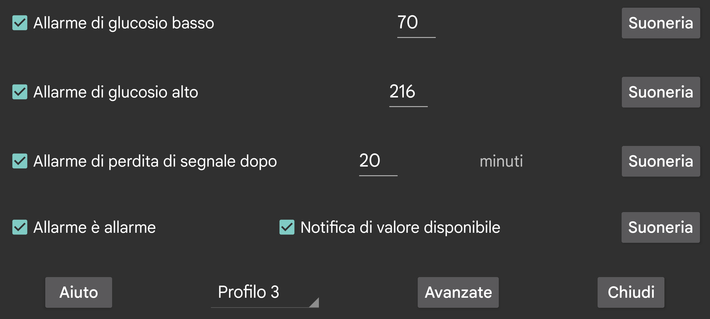

ar be de es fr hi it ja nl pl pt ru sv tr uk uz zh en
I valori del flusso ricevuti tramite Bluetooth possono essere usati per impostare gli allarmi di glucosio basso e alto.
Valore al di sotto del quale o uguale al quale dovrebbe scattare un allarme.
Valore al di sopra del quale o uguale al quale dovrebbe scattare un allarme.
Specifica dopo quanti minuti dovrebbe scattare un allarme se non viene ricevuto alcun valore del glucosio tramite Bluetooth.
Gli allarmi si fermano quando si verifica una delle seguenti condizioni:
- È trascorsa la durata specificata;
- La vista della curva viene toccata;
- La notifica Android di Juggluco viene toccata (in stato sbloccato);
- Viene toccato il pulsante Annulla della notifica di allarme in Juggluco;
- Viene toccato il Glucosio flottante.
A volte il sensore smette temporaneamente di funzionare. Con questa opzione attiva, sarai avvisato quando torna a funzionare — ma solo se hai effettivamente aperto Juggluco e visto tu stesso il valore mancante. Se hai notato la mancanza solo dalla notifica di Juggluco o dalla watchface, la notifica "Valore disponibile" non sarà attivata.
Per ogni allarme puoi specificare quale Suoneria riprodurre e per quanto tempo.
Quando "allarme è allarme" è selezionato, alla Suoneria riprodotta per gli allarmi di glucosio basso, alto e perdita di segnale viene assegnata la categoria sonora Allarmi. Questo significa che nelle impostazioni Android il suo volume viene gestito con il cursore Allarmi, e non viene silenziata quando il telefono è in modalità silenziosa o vibrazione. Quando Allarme è allarme non è selezionato, viene usato il cursore del volume delle notifiche sui telefoni, e il cursore del volume di sistema sui Samsung Galaxy Watch dal 4 al 7. Questo è sempre il caso per la notifica di valore disponibile.
Specifica per quale profilo sono queste impostazioni. In questo modo puoi alternare tra impostazioni per gli allarmi e per pronuncia. Puoi specificare un profilo perché venga attivato automaticamente a un certo orario in Avanzate → Programmazioni.
Menu con allarmi avanzati: molto basso, molto alto, presto basso, presto alto e puoi programmare profili perché diventino attivi a determinati orari.